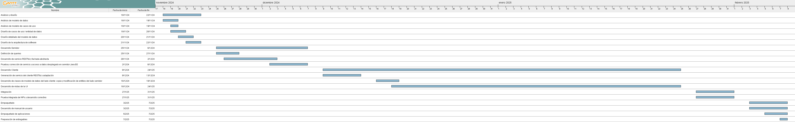

Planificación
Fases del Proyecto
| Fase | Duración | Actividades |
|---|---|---|
| Primera fase | 1 semana 18/11/2024 - 22/11/2024 |
|
| Segunda fase | 2 semanas 25/11/2024 - 06/12/2024 |
|
| Tercera fase | 7 semanas 09/12/2024 - 24/01/2025 |
|
| Cuarta fase | 1 semana 27/01/2025 - 31/01/2025 |
|
| Quinta fase | 1 semana 03/02/2025 - 07/02/2025 |
|
Cronograma
